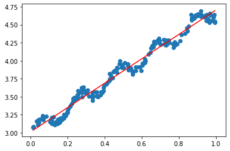
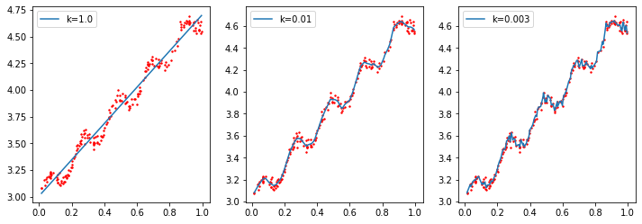

线性回归与局部加权线性回归
Boylad · 2019-12-14
线性回归1
如果自变量有p个，线性回归模型的形式为：
$$y=\beta_0+\beta_1x_1+\beta_2x_2+\cdots+\beta_px_p+\epsilon$$
如果有n个样本，则线性模型的样本形式为：
$$y_i=\beta_0+\beta_1x_{i1}+\beta_2x_{i2}+\cdots+\beta_px_{ip}+\epsilon_i, \ \ i=1,2,\cdots,n.$$
如果记
$$\mathbf y=\left[ \begin{array}{ccc}
y_1\\
y_2\\
\vdots\\
y_n
\end{array} \right]; \ \
\mathbf X=\left[ \begin{array}{ccc}
1 & x_{11} & x_{12} & \cdots & x_{1p} \\
1 & x_{21} & x_{22} & \cdots & x_{2p} \\
\vdots & \vdots & \vdots & \cdots & \vdots \\
1 & x_{n1} & x_{n2} & \cdots & x_{np}
\end{array}\right]; \ \
\mathbf{\beta}=\left[ \begin{array}{ccc}
\beta_0 \\
\beta_1 \\
\vdots \\
\beta_p
\end{array} \right]; \ \
\mathbf{\epsilon}=\left[ \begin{array}{ccc}
\epsilon_0 \\
\epsilon_1 \\
\vdots \\
\epsilon_p
\end{array} \right]$$
则矩阵形式为： $$\mathbf{y=X\beta+\epsilon}$$
根据最小二乘估计：
$$\mathbf{\hat\beta=(X^TX)^{-1}X^Ty}$$
其中，$\mathbf{y}$ 为列向量。
因变量的拟合值为： $$\mathbf{\hat y=X\hat\beta=X(X^TX)^{-1}X^Ty}$$
数据有200行，前5行数据如下所示。回归时，用前2列数据作为自变量，第3列数据作为因变量。
from numpy import *
import matplotlib.pyplot as plt
import pandas as pd
import numpy as np
for i, line in enumerate(open('ex0.txt').readlines()):
if i <=4:
curLine = line.strip().split('\t')
print(curLine)
['1.000000', '0.067732', '3.176513']
['1.000000', '0.427810', '3.816464']
['1.000000', '0.995731', '4.550095']
['1.000000', '0.738336', '4.256571']
['1.000000', '0.981083', '4.560815']
def loaddataSet(filename):
numfeat = len(open(filename).readline().split('\t'))-1 # numfeat=2
dataMat = [];labelsVec = []
file = open(filename)
for line in file.readlines():
lineArr = []
curLine = line.strip().split('\t')
for i in range(numfeat):
lineArr.append(float(curLine[i]))
dataMat.append(lineArr)
labelsVec.append(float(curLine[-1]))
return dataMat, labelsVec
def standRegression(xArr, yArr):
'''用正规方程组求回归系数系数'''
xMat = mat(xArr) # mat()将list转换为矩阵，(200,2)
yMat = mat(yArr) # (1,200) 行向量(矩阵)
xTx = xMat.T * xMat # (2,200)*(200,2)=2x2
if linalg.det(xTx) == 0.0:
print('this matrix is singular,cannot do inverse\n')
return
sigma = xTx.I * (xMat.T * yMat.T)
return sigma
在正规方程中，如果 $\mathbf{X^TX}$ 不可逆，可能有两个原因：
- 有冗余feature ，譬如有两个feature联系非常紧密甚至线性相关，需删除冗余的feature。
- feature太多，feature的数目n大于样本总数m。需删除一些feature 或者做
regularization。
自变量用1维（原本是2维）在二维平面上进行线性回归可视化：
dataMat,labelsVec = loaddataSet('ex0.txt')
sigma = standRegression(dataMat, labelsVec) #（2,1）矩阵
def PlotLine(xMat,yMat,sigma):
plt.scatter(# flatten()将(200,1)变成(1,200);A[0]又将其变为(200,),numpy.ndarray
xMat[:,1].flatten().A[0],
# flatten()将(200,1)变成(1,200);A[0]又将其变为(200,),numpy.ndarray
yMat.T[:,0].flatten().A[0])
xCopy = xMat.copy()
xCopy.sort(0)
yHat = xCopy*sigma # (200,2)x(2,1)
plt.plot(xCopy[:,1], yHat, 'r')
plt.show()
PlotLine(mat(dataMat), mat(labelsVec), sigma)

局部加权线性回归1
局部加权线性回归(locally weighted linear regression, LWLR)算法，流程如下：
-
Fit
$\beta$to minimize$\displaystyle{\sum_iw^{(i)}(y_i-\beta^Tx^{(i)})^2}$ -
Output
$\beta^Tx$
该算法中，给待预测点附近的每个点赋予一定的权重，然后在其上进行基于最小方差进行普通线性回归。正规方程变为 $\mathbf{\hat\beta=(X^TX)^{-1}X^TWy}$ ，W为权重对角阵。LWLR使用核来赋予权重，最常用的是高斯核：
$$w^{(i)}=exp \left (-\frac{(x^{(i)}-x)^2}{2k^2}\right)$$
很明显，点 $x$ 与 $x^{(i)}$ 越近，权重越大。
def lwlr(testPoint, xArr, yArr, k = 1.0):
xMat = mat(xArr);
yMat = mat(yArr).T
m = shape(xMat)[0] # shape(xMat)=（200,2）
weights = mat(eye(m))
for i in range(m):
diffMat = testPoint - xMat[i,:] # 取第i行,作差
# weights为对角阵,diffMat*diffMat.T行向量乘以列向量
weights[i,i] = exp(diffMat * diffMat.T/(-2.0*k**2))
xTWx = xMat.T * (weights * xMat)
if linalg.det(xTWx)==0.0:
print('this matrix is singular,cannot do inverse\n')
return
sigma = xTWx.I * (xMat.T * (weights * yMat))
return testPoint * sigma
def lwlrTest(testArr, xArr, yArr, k = 1.0):
m = shape(testArr)[0]
yHat = zeros(m)
for i in range(m):
yHat[i] = lwlr(testArr[i], xArr, yArr, k)
return yHat
def PlotLine1(testArr, xArr, yArr, k = 1.0):
xMat = mat(xArr)
yMat = mat(yArr)
yHat = lwlrTest(testArr, xArr, yArr,k)
srtInd = xMat[:,1].argsort(0)
xsort = xMat[srtInd][:,0,:]
plt.scatter(xMat[:,1].flatten().A[0], yMat.T[:,0].flatten().A[0], s = 2,'r')
plt.plot(xsort[:,1], yHat[srtInd], label = "k=" + str(k))
plt.legend()
自变量用1维（原本是二维）在二维平面上进行LWLR可视化：
plt.figure(figsize = (12, 4))
for iid, i in enumerate([1.0, 0.01, 0.003]):
plt.subplot(1, 3, iid+1)
PlotLine1(testArr=dataMat, xArr=dataMat, yArr=labelsVec, k=i)
plt.show()

k=1.0欠拟合，k=0.003过拟合，当k=0.01时相对是是比较好的回归。
-
本文整理自：https://www.cnblogs.com/xiaoboge/p/9404140.html ↩︎